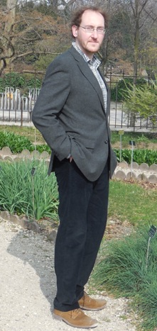

Alexander M Kasprzyk
Associate Professor in Geometry
Room B07
School of Mathematical Sciences
The University of Nottingham
University Park
Nottingham, NG7 2RD
United Kingdom
+44 (0)115 951 3839
a.m.kasprzyk@nottingham.ac.uk
Research
Students and Teaching
Seminars, Conferences, and Workshops
Graded Ring Database